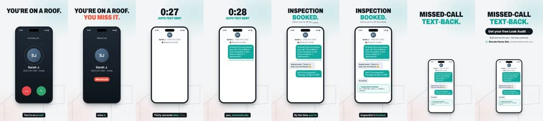

Genx Video Studio · Elevate Home Ads · ASCENTRA
Now showing
Every explainer made so far, the prompts behind it, and the queue for what's next.
Production
The board
Briefs move left to right. Add one with New video, then say "process the Studio queue" in a Claude Code session with this repo.
01You brief itFill in New video and add it to the board.
02You say go"Process the Studio queue" in a session with this repo.
03Claude makes itScript, voice, animation, stills check, render, mix, push.
04It lands hereThe hub is rebuilt and the video joins the library.
Library
Every cut
Hover a poster to preview it. Click to open the screening view with the prompts, script and frames.
How it's made
From prompt to picture
The same eight steps behind every video, shown with the real files from Missed call, text back in 30 sec.
00:00:00:00Click a clip or press play

Styles
The looks
Every style made so far. The bar shows how well it suits a teaching video, for choosing ASCENTRA course looks.
Prompts
The script room
Every prompt from this session, verbatim, and the reusable prompt files in the repo.